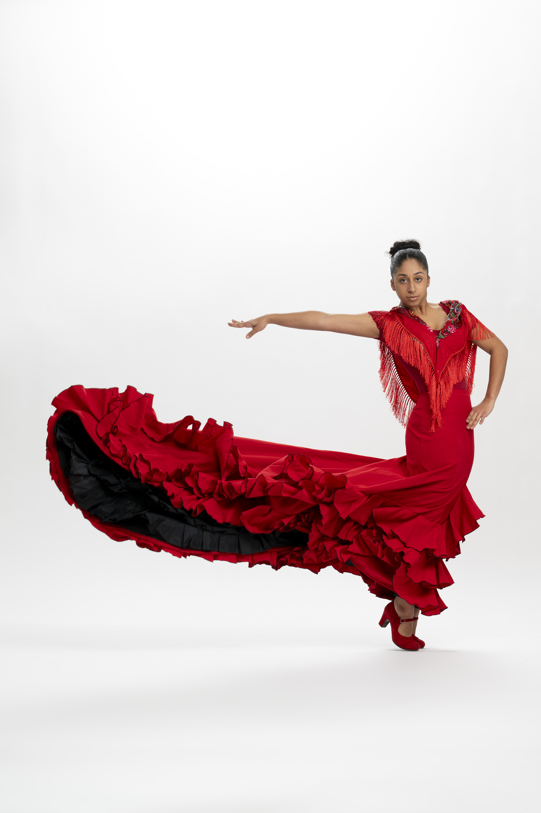
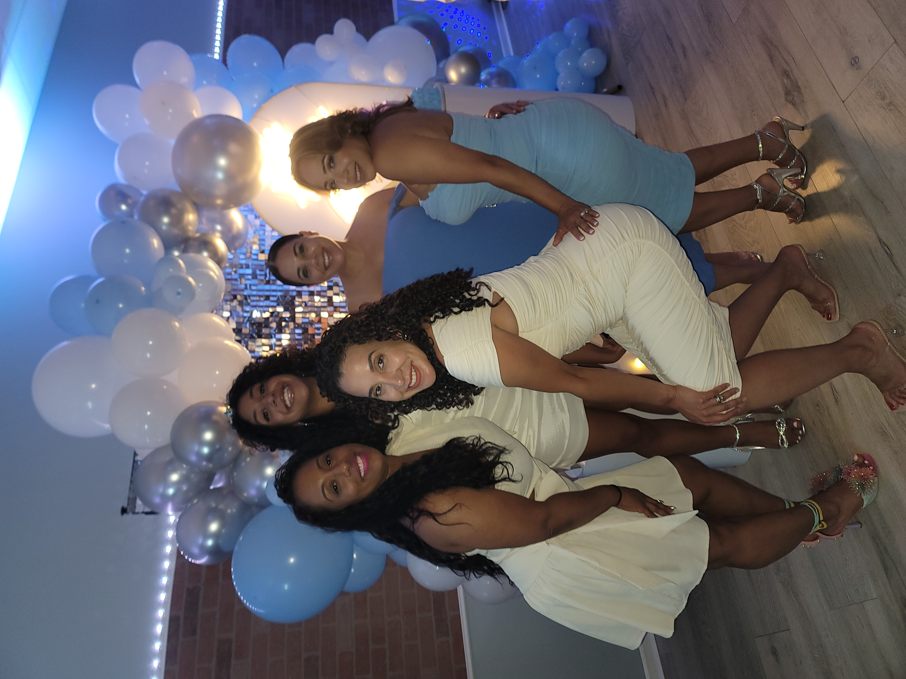

Alicia Robles
About Alicia!
I am 17 years old, and I was born and raised in The Bronx. There are many things that I love in life and would be sharing them with you!
Things I love:
- Dance
I have been dancing since I was 4 years old at Ballet Hispanico, which has become my second home. Over the years I have gained exposure through Performances, interviews, and photoshoots. Some things I have done over the years: Interview with Kelly Clarkson, Macy's Thanksgiving Parade, Gala for the Cristian Rivera Foundation, and much more.
- My family & Friends
My family has always been a big part of my life, especially my mom. I am forever gratfeul for the amount of sacrifices she has made for me to build the life I have now. One lesson she has taught me is family is not always blood, but the ones who are there in your darkest hour. Which is why my friends are very important to me (and my boyfriend, can't forget him) because they are there for me whenever I need.
- Dogs
I am a BIG dog lover. When I was younger I had a black and white pitbull who was the sweetest ever. Then in 8th grade I got my dog now, who is an Ameican Bully (in all aspects of the name, she is a bit of a bully). However, she is still my sweet girl!
- Vacationing
I absolutley love going to places around the world, trying the food, relaxing, and tanning. I have gone to places like: Puerto Rico, Dominican Republic, Mexico, The Bahamas, and in May I will be going to Canada. No matter where I go, whether it is my home countries or somewhere new, I always needs to visit a landmark. Culture is important wherever you go, so it is important to experience it first hand.
Photos of Me!

